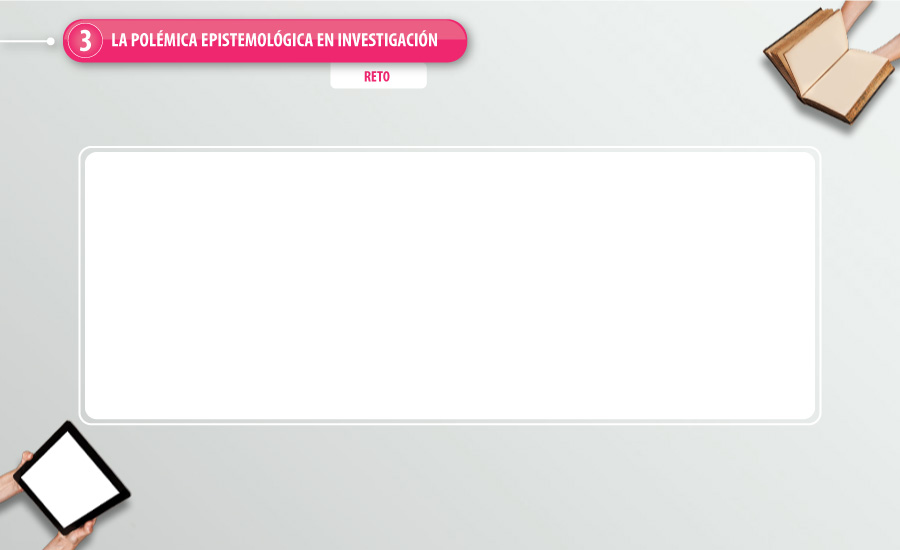

¡Es correcto!
El poder distinguir los aportes de las técnicas de investigación cuantitativas y cualitativas en los modelos epistemológicos es una de las tareas principales en la construcción y el desarrollo de procesos investigativos.
Intente nuevamente
La polémica epistemológica parte justamente de la confusión en las técnicas de investigación cuantitativas y cualitativas con los modelos.
-
